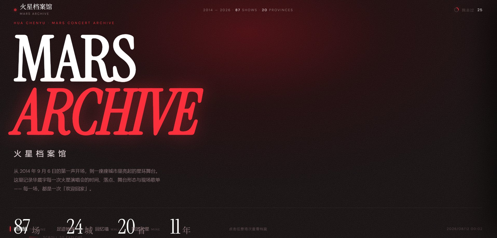
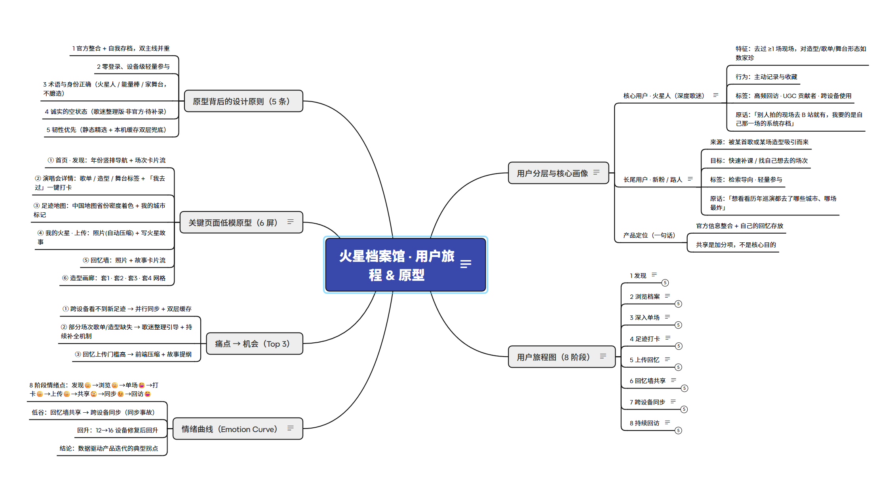
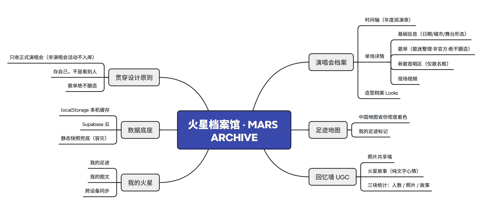
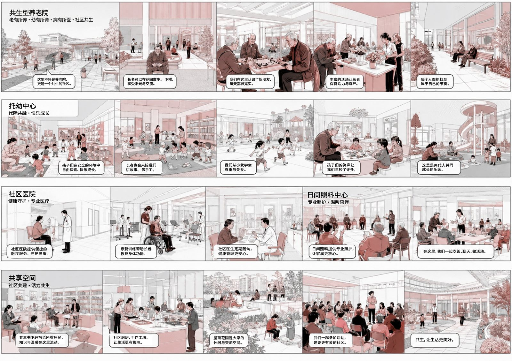
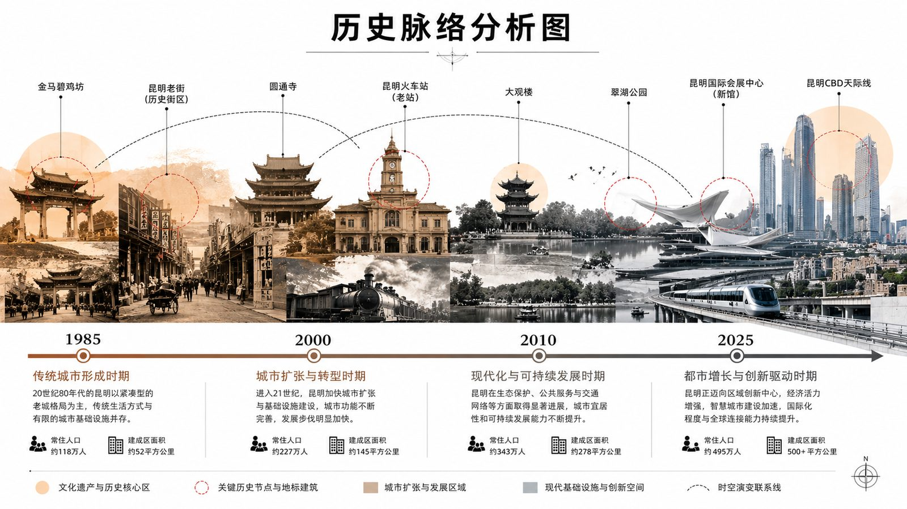
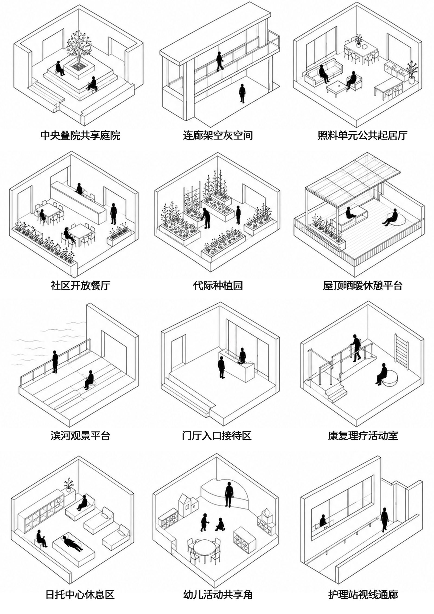
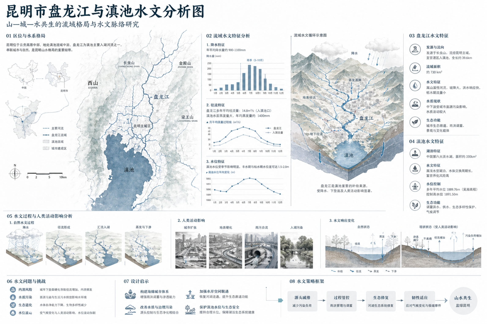
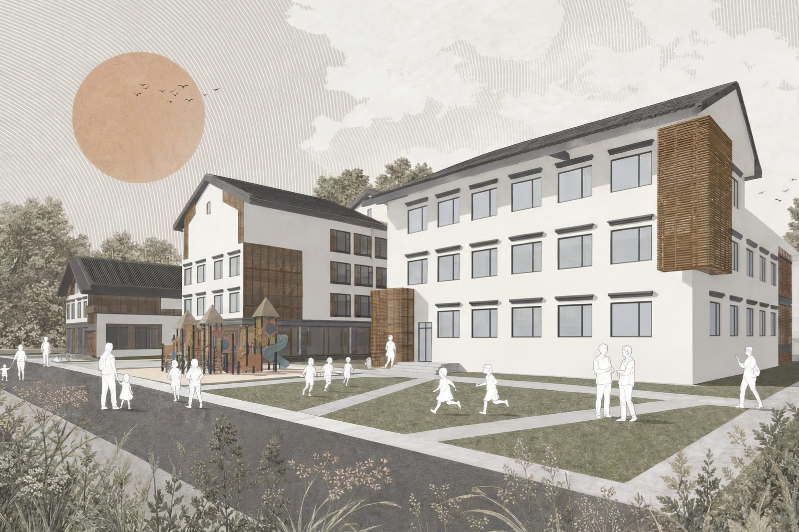

AI 产品经理 · 用 AI 解决真实问题，从 0 到 1 构建产品
不写代码，但懂 AI 能力边界与产品化落地
87 场官方数据 + 歌迷共创回忆墙 · 从 0 到 1 上线的 AI 驱动产品



毕业设计 · ChatGPT + Gemini 完成 17 张分析图 + 9 张效果图，覆盖前期调研到成果交付





省级大创项目 AI 升级 · 21 个专业 · AI 虚拟学长在线对话
从岗位匹配到模拟面试，AI 驱动的求职全流程工具
以「AI 产品经理」岗位 JD 为例，展示同一份简历优化前后的关键词覆盖变化